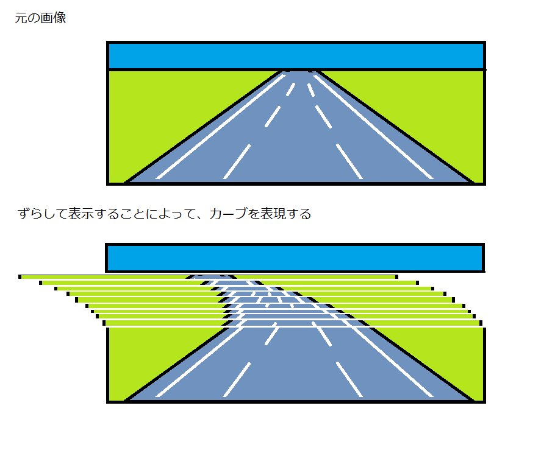

プチコン講座
初心者の方へ
プチコンやプログラムに関して、初心者の方は公式サイトのプチコン初心者講座が一番丁寧でわかりやすいです。 プチコンmkII 初心者講座
ＭＭＬの基礎
プチコンではMMLによって、音楽を打ち込むことができます。
はじめはわかりにくいですが、実際に使ってみると案外単純なことがわかると思います。

要するに、音楽の楽譜をアルファベットで表現したものになっています。
アルファベットで音階、休符はR(ギターのコードを知っていると馴染みやすいかも)、
数字で長さ、2なら二分音符、8なら八分音符。省略した場合は４分音符。
意外と単純であることがわかると思います。
※ 省略時の音符の長さは最初に設定することもできます。
また、MMLでは音楽の楽譜同様の繰り返しを行うことができます。[ と ]
実際にプチコンに打ち込む場合はこのようになります。

プチコンの場合MMLはデータ文で定義するのが一般的になっています。
冒頭の部分で曲全体にかかわるテンポなどを設定し、バンドスコアのパートに当たる部分をチャンネルとして、打ち込んでいきます。
チャンネルでは、チャンネル番号、使う楽器の種類を設定してから、実際のメロディ譜に当たる部分を書いていきます。
実行する際は、データ文からBGMに設定して、その後再生します。
昔風のレースゲームの道路
昔風のレースゲームは、このようにして道路の曲線を表現しているものがありました。 ファミコンなどでは、ディスプレイに出力する際に、上から1行づつ描画していたので、描画時に座標をずらすことができました。 これをラスタースクロールといいます。
プチコンでは、そのような機能がないため、グラフィック領域に１行づつずらしながら描画することによって、一応実現できますが、 プチコンではグラフィック処理が低速なため、書き込む回数が多いと確実に処理落ちしますので、あまり細かくずらして表示することは現実的ではありません。 自分はゲーム全体の速度を遅くして、1px単位で描画することによって綺麗な画面を出していますが、フレームレートは非常に低いのが現状です。